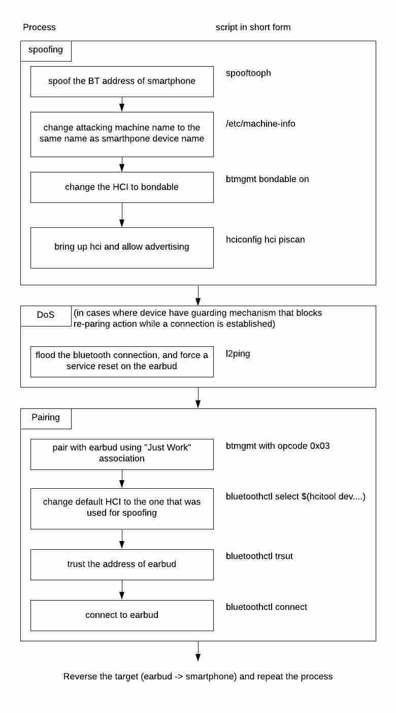
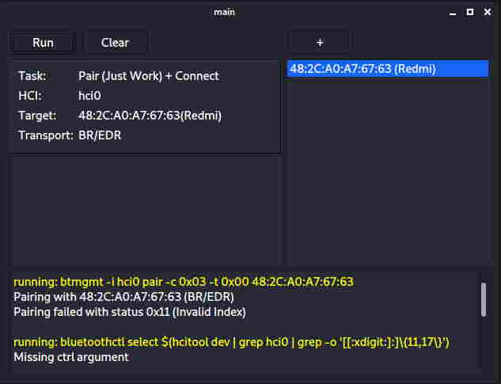

During my last semester at BCIT, in oder to get my CST bachelor degree, I had to come up with a software or poduct that the CST program committee would accept. Instead of developing a normal application, I chose a topic related to my program option (Network Security).
While I was looking for ideas for my final project, I came across this paper . The paper is about how attacker can exploit an bluetooth vulnerability (assigned with CVE-2020-15902). The underlying principle behind the vulnerabitily is simple. I thought this could be an opportunity for me to learn something about bluetooth, so I decided to write a simple exploit base on this vulnerability.
CTKD vulnerability
In Bluetooth v4.2, a module called "Cross-Transport Key Derivation" (CTKD) was introduced. The module allow two bluetooth device pair once on either Bluetooth Classic (BT) or Bluetooth Low Energy (BLE).
The issue with the CTKD module is that it corsses the security boundaries between BT and BLE, which make the vulnerability exploitable for both transport. The paper goes into more detail on how this affects bluetooth security. Basically, the main problem is that pairing on one transport can overwrite the existing long term key generated from another transport.
Also, in bluetooth classic, the master and slave roles are not fixed. Attackers can take advantage of this role asymmetry to impersonate a slave device that is already trusted by a master device. After, it can send pairing requests to that master device. If the pairing request is accepted, the LKT generated by the acutal slave device will be overwritten
Steal Bluetooth session
After few weeks of research (mostly just googling and stackoverflow), I came up with a series of commands to target the weakness described previously. As shown in the following figure. 
list of commands in the hijacking processOne key factor in the success of the hijacking relies on the chosen association mechanism. An association mechanism is chosen base on the IO capability of both devices. Both initiator and responder will find an appropriate connecting method depending on their pairing features. If we set the IO capability to "NoInputNoOutput", the association mechanism "Just Work" will always be chosen. This mechanism requries little to no user interaction, which make the attack less suspectable to the user.
CTKD does not enfore chosen association mechanism across bluetooth calssic and bluetooth low energy, which allows attackers to pair with a weak association mechanism such as Just Work. User is not going to notice an attacker that is repairing using Just Work pretending to be a trusted device.
Source code
The source code of the sample exploit can be found here . I only tested the exploit on a Redmi smartphone and a samsung galaxy ear, and it worked. I ran the exploit on a kali linux machine, and have it established itself as a middle man between the two target device. However, to be honest, the exploit still needs alot more work to make it usable in common circumstance. Anyways, this small project just shows that bluetooth can be unsafe sometimes.
 screen capture of the exploit